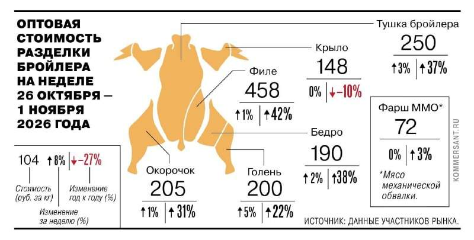
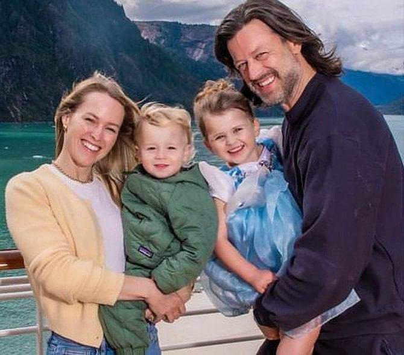
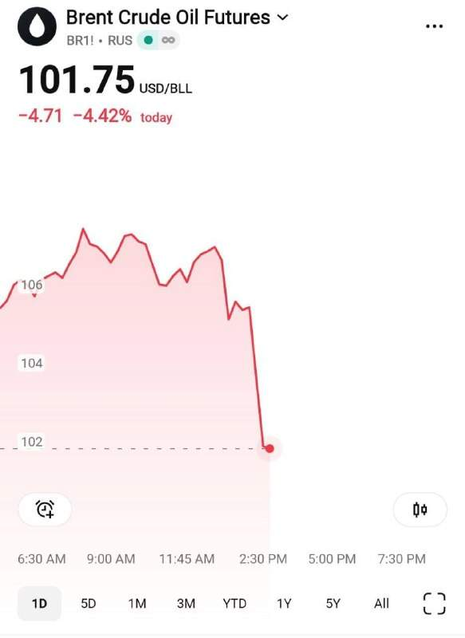
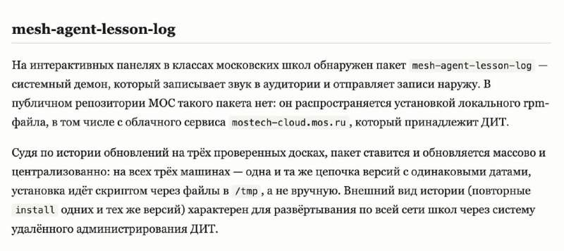

КНДР опровергла взлом Binance и кражу $6,3 млрд — центральное телеграфное агентство Кореи. Сестра Ким Чен Ына назвала обвинения политической провокацией США, а все доказательства — сфабрикованными. @bankrollo
КНДР опровергла взлом Binance и кражу $6,3 млрд — центральное телеграфное агентство Кореи. Сестра Ким Чен Ына назвала обвинения политической провокацией США, а все доказательства — сфабрикованными. @bankrollo
Один из крупнейших НПЗ в России атаковали дроны ВСУ, он загорелся. Завод находится в Ярославле, в результате атаки предприятие получило повреждения, сообщил губернатор Евраев. Два сотрудника госпитализированы с осколочными ранениями. Обломками сбитых БПЛА также выбило стекла в нескольких многоквартирных и частных домах, повреждены автомобили. @bankrollo

Курица снова дорожает в России. За год бройлеры подорожали на 37%, а филе — на 42%. Даже резкий рост поставок из Китая не смог остановить подорожание самого доступного мяса. Теперь 1 кг бройлера в опте стоит около 250 рублей, а филе — 458 рублей. При этом производство мяса птицы за 9 месяцев сократилось на 5,7%, пишет Коммерсантъ. @bankrollo
Российским курьерам запретят ездить по тротуарам. По данным Минтранса, доставщики часто используют мощные мопеды, при столкновении с которыми пешеходы рискуют получить серьёзные травмы. Министерство уже подготовило поправки в ПДД, пишет Коммерсантъ. @bankrollo

Во Флориде частный самолёт рухнул прямо на дорогу на скорости 540 км/ч. На борту было 9 человек. @bankrollo https://t.me/bankrollo/69371 Мультимиллионер Адам Робинсон, его жена и двое детей погибли при крушении самолета во Флориде. Робинсону было 44 года, он основал компании-разработчики программного обеспечения Retention. com и RB2B и занимал там пост гендиректора. Ранее он работал в Lehman Brothers и Barclays Capital. @bankrollo
В Сербии задержали владельца популярного у россиян ALTA банка Давора Мацуру. Перед этим сербские полицейские более 30 часов проводили обыск в банке. В конце октября Нацбанк Сербии отозвал лицензию у ALTA банка из-за ухудшения финансового положения и угрозы… https://t.me/bankrollo/69405 83-летняя слепая россиянка лишилась всех денег из-за краха Alta Banka в Сербии. На её счетах было 270 тысяч евро после продажи дома, но она не успела ими воспользоваться, пишет Baza. Незадолго до закрытия банка она решила продать дом в Канаде и перебраться к дочери в Сербию. В субботу женщина прилетела в Белград, но оказалось, что средства заблокированы. Теперь женщина надеется хотя бы на выплату страховки в 50 тысяч евро. @bankrollo
Переобуться в России стало на 12% дороже. Работы по смене резины в этом году обходились водителям в среднем в 2,5 тысячи рублей, пишут Известия. Средняя стоимость всего заказ-наряда, включающего также сопутствующие услуги и товары, составила 7,6 тысячи рублей. Москвичи кинулись менять резину после сообщений о первом снеге — за последнюю неделю октября число обращений выросло втрое. @bankrollo
В России могут создать платные парковки для электросамокатов и велосипедов. Для таких парковок хотят отвести специальные зоны, отмеченные знаком, следует из постановления правительства. Кроме того, Минтранс предлагает запретить детям младше 16 лет передвигаться на СИМ по территориям общего пользования — улицам, скверам, набережным и бульварам. @bankrollo
Приставы начнут искать данные о работе, счетах и доходах россиян в странах СНГ. Путин подписал закон о ратификации соглашения с этими странами. Документ, помимо России, подписали Армения, Азербайджан, Кыргызстан, Таджикистан, Беларусь, Узбекистан и Казахстан. Беларусь при этом согласилась сообщать только о факте наличия счетов, не раскрывая суммы и названия банков, Узбекистан не будет отвечать на запросы, вынесенные на основании решений несудебных органов и нотариусов, а Казахстан ограничил передачу банковских сведений нормами своих законов. @bankrollo
ГК ССК выводит гостиничный комплекс Сенсора уровня 4* на 1025 номеров площадью 65 283,1 кв. м — четвёртый отельный объект девелопера и третий туристический в Анапе. После запуска портфель курортной недвижимости компании вырастет до 1,89 млн кв. м, из них 471,2 тысячи кв. м — отели. Порог входа в проект с концепцией здоровья — от 12 млн рублей за номер с отделкой и мебелью, ориентир доходности под управлением оператора AVERON — около 15% годовых. Строительство планируют завершить в 2029 году, с 2026 года номера можно покупать по ДДУ. По оценкам экспертов, в развивающихся прибрежных локациях стоимость может прирасти на 30–70% за два-три года. @bankrollo
ФСБ получит все данные клиентов криптообменников в России. Такой пункт есть в предложениях Центробанка к закону «О цифровых валютах и цифровых правах». По нему, ФСБ сможет узнать ФИО клиента, паспорт, ИНН, номера телефонов, сведения о сделках и банковские реквизиты, номера счетов и адреса кошельков, IP-адреса и время входов, а также чат. Хранить эти данные можно будет только на российских серверах. @bankrollo
Плановое ТО Lada Vesta подорожало до 50 тысяч рублей. Такую сумму владельцам придётся отдать за шестое ТО по официальным расценкам АвтоВАЗа. Для Lada Largus обслуживание и вовсе обойдётся в 54 тысячи рублей. В среднем стоимость ТО Lada выросло на 15%. Его стоимость росла уже несколько раз за год, пишут СМИ. @bankrollo
Около 450 тысяч сайтов могут упасть в рунете из-за масштабного сбоя у хостинг-провайдера Beget. Проблемы начались посреди ночи, сейчас инженеры вручную восстанавливают серверы в дата-центрах. Beget — один из крупнейших хостинг-провайдеров в России. @bankrollo https://t.me/bankrollo/69379 Beget потерял все данные в облачной инфраструктуре, также утрачены настройки IP и CDN, заявил хостинг-провайдер. Beget — второй по числу доменов в зоне .RU регистратор и хостер: 540,7 тысячи доменов. @bankrollo
63% россиян хотя бы раз засыпали на работе — РИА Новости. 8% опрошенных и вовсе признались, что часто спят в рабочие часы. @bankrollo

США и Иран договорились пойти на уступки друг другу по ядерной программе и замороженным активам — арабские СМИ. На этом фоне нефть рухнула на 5%. @bankrollo
Трамп пообещал стать премьер-министром Израиля: «Если когда-нибудь в США от меня устанут, я перееду в Израиль и стану премьер-министром. У меня там рейтинг одобрения 99%». @bankrollo

В школах Москвы нашли скрытую прослушку. Интерактивные доски могут записывать все разговоры учителей и учеников, выяснил один из преподавателей. В июле программа называлась «Агент для аудиозаписи уроков», но в октябре её переименовали в «Агент обеспечивает проведение урока». Запись может включаться удалённо или автоматически на месте, а каждая доска привязана к конкретной школе и кабинету. Все записи передаются в инфраструктуру московских властей. @bankrollo
Россия заменит Украину на чемпионате мира по хоккею в 2027 году — Международная федерация хоккея. Сборная Украины хотела получить это место 20 лет. @bankrollo https://t.me/bankrollo/69326 Сборные по хоккею Швеции, Финляндии, Норвегии, Дании и Латвии отказались играть на чемпионате мира 2027, если на него допустят Россию. @bankrollo
Binance опубликовала официальное расследование кражи $6,3 млрд, и шпионки из КНДР там нет. В июне сотрудник скачал заражённый ИИ-инструмент, и хакеры получили сведения о сотрудниках. В сентябре другого инженера заманили на фальшивое собеседование и убедили скачать вредоносный код. В октябре хакеры получили контроль над криптокошельками через заражённый компьютер. @bankrollo
Креативную экономику важно рассматривать как инструмент международной кооперации, новую модель управления территориями и фактор социальных изменений, заявила президент Единого центра креативной экономики Марина Монгуш на форуме-фестивале «Российская креативная неделя — Евразия». Для кооперации между странами в России обсуждают формирование Евразийского альянса креативных индустрий, готовой точкой сборки способен стать Башкортостан. Евразийский формат перспективен, а в основе экономического развития страны должны лежать ценности, подчеркнул заместитель начальника Управления Президента Российской Федерации по общественным проектам Александр Журавский. @bankrollo
Россия может начать эскалацию на границе с Польшей уже в первой половине ноябре — премьер Туск. Силовики на границе перешли в режим «полной мобилизации». @bankrollo
Дмитриев и уполномоченная по правам человека Лантратова едут в Вашингтон на встречу с Меланией Трамп. Встреча пройдёт 5 ноября в трёхстороннем формате Россия — США — Украина. @bankrollo
Израиль сообщил США, что Иран хочет применить химическое оружие — New York Times. Американские чиновники отнеслись к информации скептически. @bankrollo